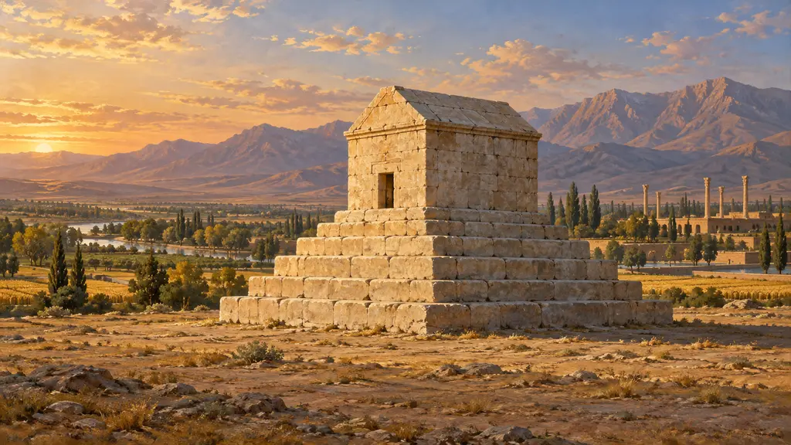
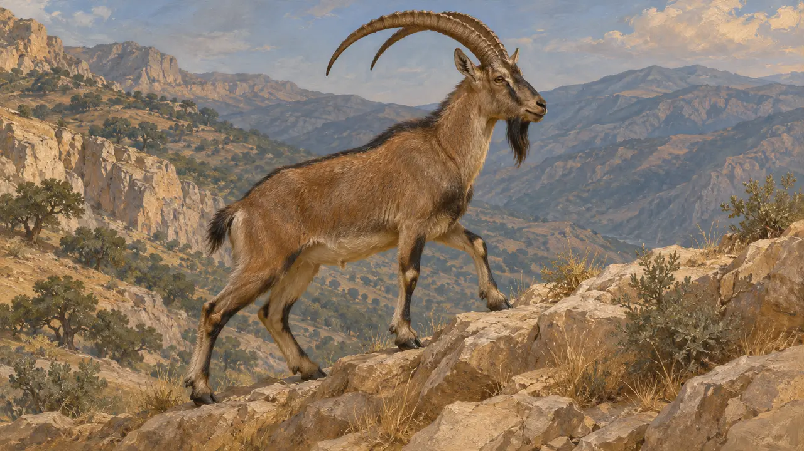
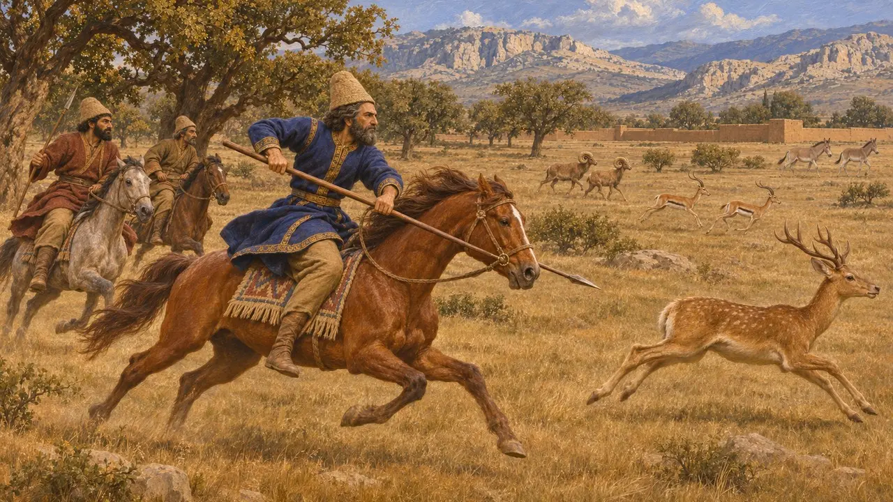
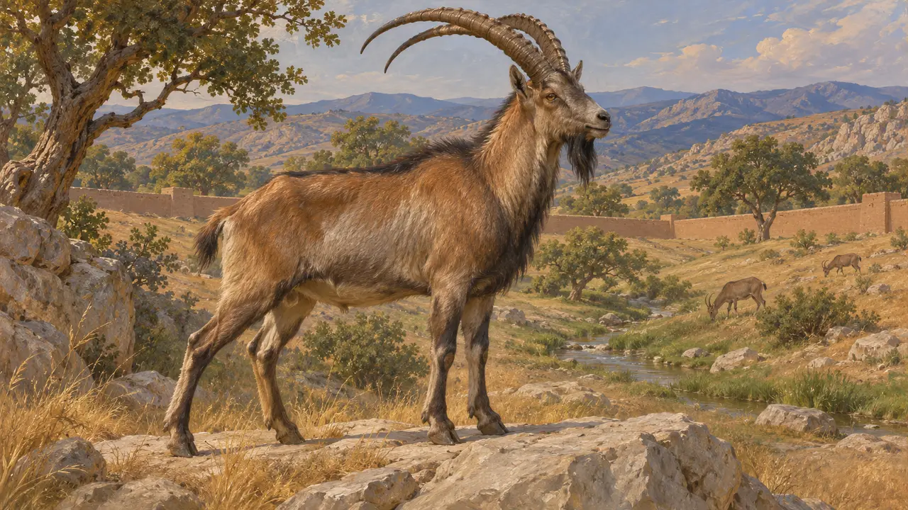
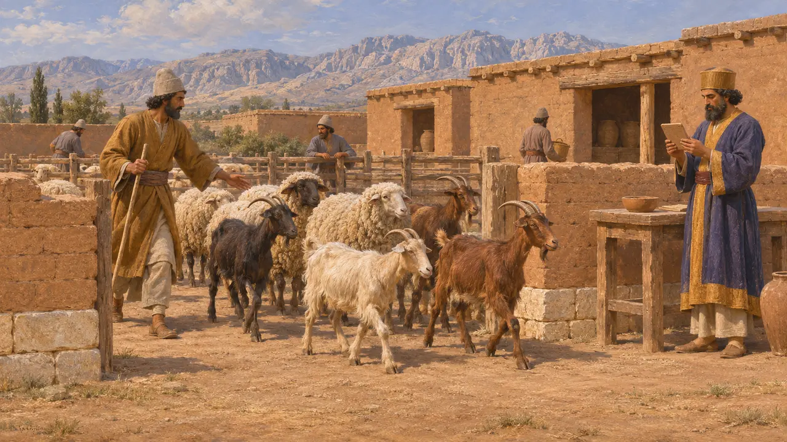
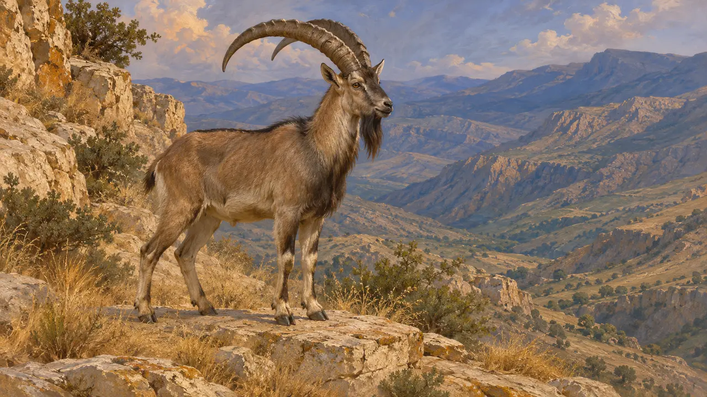

Энциклопедия › Животный мир и погода

Дикая коза
Безоаровый козёл Загроса и персидских гор, VI–V века до н. э.
В игре: Уровень 1: Гробница основателя, Уровень 3: Ложь, Уровень 4: Терраса
Дикая коза Иранского нагорья, безоаровый козёл (Capra aegagrus), жила на скалах и осыпях Персиды и Мидии. Это дикий предок домашней козы. Сохранившиеся источники говорят о ней мало, и значима она здесь главным образом как часть нагорного пейзажа, знакомого персам.
В игре: Дикие козы появляются как элемент пейзажа на уровнях Пасаргад, Парсы и Багастаны, держась скал, крутых склонов и осыпей. Ни одно правило их не учитывает. Их место в охотничьем пейзаже игры — вывод из ландшафта, а не из персидского текста.

Животное и его ареал
Свидетельства эпохиБезоаровый козёл обитает в горах западного и южного Ирана, в Загросе и соседних хребтах, а также в некоторых областях Анатолии и Кавказа. Он живёт на каменистых склонах и утёсах и ловко лазает по скалам. Кости животных, найденные при раскопках, показывают, что коз впервые одомашнили в районе Загроса за тысячи лет до Ахеменидов, так что дикая форма была древней местной породой.
Excavation reports on early goat domestication in the Zagros (modern studies)

Охотничьи сцены у Ксенофонта
Античное свидетельствоКсенофонт, писавший в IV веке до н. э., рассказывает, как юный Кир охотится в мидийском охотничьем парке, и называет добычей оленей, газелей, диких овец и диких ослов. Диких коз в этом перечне нет. Ксенофонт написал идеализированное жизнеописание Кира, так что эта сцена показывает, чем, по мнению греческого читателя, занимался персидский царевич, а не передаёт свидетельство о самом Кире.
Xenophon, Cyropaedia 1.4.7

Парки и царская охота
Античное свидетельствоКсенофонт описывает парадейсос Кира Младшего в Келенах — огороженный парк, полный диких животных, где тот охотился. Слово иранского происхождения. Какие виды жили в том или ином парке, по большей части не зафиксировано, поэтому дикую козу можно поместить туда лишь как вероятное животное холмов, а не по конкретному тексту.
Xenophon, Anabasis 1.2.7

Козы в персепольских табличках
Свидетельства эпохиТаблички из Укреплений Персеполя фиксируют пайки и скот, и среди выданных или учтённых животных встречаются козы и овцы. Эти тексты касаются домашних стад, поэтому они не показывают, что дикие козлы были объектом охоты. О диком виде они не свидетельствуют ни в ту, ни в другую сторону.
Persepolis Fortification tablets, without a tablet number

Чего сказать нельзя
СпорныйСоставителям этой статьи не известна ни одна персидская надпись, которая называла бы дикого козла охотничьим зверем или отводила ему ритуальную роль. Рогатых животных в ахеменидском искусстве порой считают дикими козлами или горными козлами-ибексами и связывают с царской охотой или плодородием, но это лишь толкование, и источники вопроса не решают. Дикого козла лучше всего рассматривать как часть нагорного ландшафта.
P. Briant, From Cyrus to Alexander, 2002
Источники
- Xenophon, Cyropaedia 1.4.7
- Xenophon, Anabasis 1.2.7
- P. Briant, From Cyrus to Alexander, 2002
- Persepolis Fortification tablets, without a tablet number